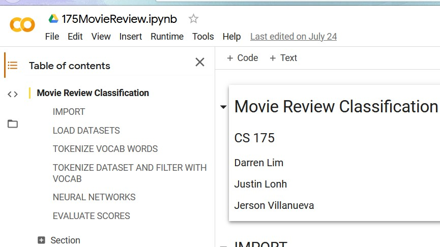

[ Justin Lonh ]
Project in Artificial Intelligence
Project Summary and Findings (Google Slides)
Languages/Technologies Used: Python, TensorFlow, Google Colab
This project was a natural language processing project conducted by myself, Darren Lim, and Jerson Villanueva for the CS 175: Project in Artificial Intelligence course at UCI. We conducted experiments to compare the accuracy of different neural network models and word embedding techniques when used to process and predict the sentiment of text movie reviews, classifying them as positive or negative sentiment. Specifically, we experimented with convolutional neural networks, recurrent neural networks, regular neural networks with GloVe word embeddings, one hot encoding, and word2vec word embeddings. In the initial stages of our experiment, we rejected one hot encoding and word2vec due to their poor accuracy, and focused further experimentation on CNN, RNN, and neural network with GloVe.
I personally worked on the integration of the movie review datasets into our Google Colab environment. I also integrated the movie review data into the tokenization and vocabulary creation sections of our data pipeline. I then coded the proper neural network layers and parameters for the convolutional neural network and the recurrent neural network, as well as the code for saving and reloading neural network models for use once training had completed.
Overall, this project went fairly smoothly despite the machine learning knowledge prerequisites needed to implement our experiments. We took advantage of TensorFlow documentation that provided guidance on how we could use it in regards to natural language processing. We then easily incorporated the addition of various word embedding techniques into our data processing to start conducting experiments. There was some trial and error when it came to setting the correct parameters to process our data into the neural networks correctly. From there, full-fledged experimentation became a little bit frustrating because we found that with the default settings in Google Colab, it would potentially take around 3 hours to run one neural network model once. Thankfully, we realized that Google Colab provides free GPU acceleration, which reduced 3 hours to 20 minutes.
By the end of the project, we found that convolutional neural networks and recurrent neural networks worked relatively well for classifying movie reviews, with about 80% accuracy for both. Meanwhile, GloVe word embeddings on top of a regular neural network did not perform as well as the other models. Furthermore, we found that models trained on one dataset did not have a satisfactory accuracy when tested on samples from a different dataset, which may mean that the accuracy of our models depended on the quality and size of the dataset it was trained on. If you're interested in reading more about our results, feel free to look at our code linked at the top of this project page, as well as the link to our Google Slides presentation summarizing our experimentation process and findings.
This project personally felt very rewarding because our project group was able to independently pick a topic that interested all of us (natural language processing), and I was able to actually put the many months of learning the concepts behind machine learning from previous courses into a practical experiment with valuable results. I also loved learning to use TensorFlow and Google Colab, both machine learning tools that are very useful and that allowed us to relatively easily implement the neural networks we needed.